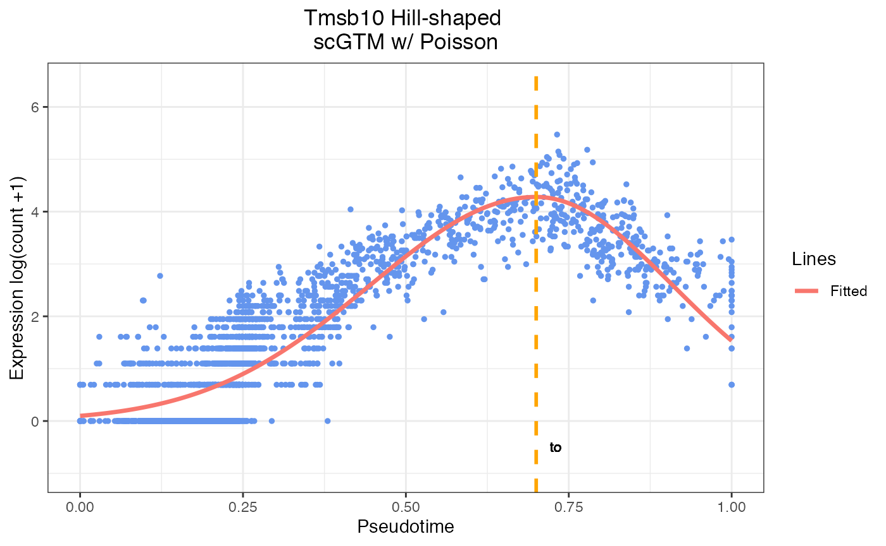

Introduction
Modeling single-cell gene expression trends along cell pseudotime is a crucial analysis for exploring biological processes. However, model interpretability and flexibility are both indispensable for understanding biological processes.While existing methods either provide trends too complex to interpret using nonparametric models or use interpretable but restrictive models. Therefore, we propose scGTM, a flexible and interpretable modeling method that capture non-monotonic gene expression trend, generate biologically interpretable param- eters, and accommodate common gene expression count distributions. Comprehensive simulations and real-data applications verify that scGTM outperforms existing methods in interpretability and flexibility. Implemented by R, we enable the method to be applied in a fast and easy way. The R package supports multiple data input types, multi-core processing, and customized plotting.\ Here are the explanations on the parameters of scGTM:\ t: A numeric vector of the input normalized pseudotime data of a given gene,length equals the numbers of cells\ y1: A vector of integers, representing the input expression counts of a given gene,length equals the numbers of cells\ gene_name: A single string vector, indicates the gene name used in the model, default=NULL\ marginal: A string of the distribution name. One of \({Poisson}\), \({ZIP}\), \({NB}\), \({ZINB}\), and \({Gaussian}\).default=\({ZIP}\)\ iter_num: A single integer vector, indicates max number of iteration used in the PSO algorithm that estimates model parameters\ seed: A numeric variable of the random seed, affecting parametric fitting of the marginal distribution.default=123\
suppressPackageStartupMessages(library(stats))
suppressPackageStartupMessages(library(BiocParallel))
suppressPackageStartupMessages(library(ggplot2))
suppressPackageStartupMessages(library(tibble))
suppressPackageStartupMessages(library(cowplot))
suppressPackageStartupMessages(library(scGTM))In this quickstart guide, we demonstrate the basic functionality of the scGTM package. scGTM package allows users to specify the () inference method, but we will use () as the example in our analysis.
Read in the reference data
gyrus <- read.csv(file = 'gyrus_sce.csv')Run Example
scGTM(t=gyrus$pseudotime,
y1=gyrus$Tmsb10,
marginal="Poisson",
hill_only = FALSE)
#> The need of transformation: FALSE
#> We are estimating gene with marginal Poisson .
#> Best parameter estimation:
#> mu , k1 , k2 , t0:
#> 4.09 8.98 4.11 0.65 -5.6
#> The 95% confidence interval of the activation time t0:
#> t0 : ( 0.633 , 0.674 )
#>
#> The 95% CIs for activation strength k1 and k2:
#> k1 : ( 8.068 , 9.883 )
#> k2 : ( 2.924 , 5.291 )
#> $negative_log_likelihood
#> [1] 8229.511
#>
#> $mu
#> [1] 4.088383
#>
#> $k1
#> [1] 8.975355
#>
#> $k2
#> [1] 4.107724
#>
#> $t0
#> [1] 0.6533222
#>
#> $phi
#> [1] NA
#>
#> $sd
#> [1] NA
#>
#> $alpha
#> [1] NA
#>
#> $beta
#> [1] NA
#>
#> $t0_lower
#> [1] 0.633
#>
#> $t0_upper
#> [1] 0.674
#>
#> $t0_std
#> [1] 0.01052522
#>
#> $k1_lower
#> [1] 8.068
#>
#> $k1_upper
#> [1] 9.883
#>
#> $k1_std
#> [1] 0.4630958
#>
#> $k2_lower
#> [1] 2.924
#>
#> $k2_upper
#> [1] 5.291
#>
#> $k2_std
#> [1] 0.6037062
#>
#> $mu_lower
#> [1] 3.972
#>
#> $mu_upper
#> [1] 4.205
#>
#> $mu_std
#> [1] 0.05942901
#>
#> $Fisher
#> [1] "Non-singular"
#>
#> $Transform
#> [1] 0
#>
#> $Design_para
#> [1] NAVisualization
plot_result(para = c(4.28,7.7,11.41,0.7),
t = gyrus$pseudotime,
color = c('red', 'darkviolet', 'orange', 'darkgreen'),
marginal = "Poisson",
flag = FALSE,
y1 = gyrus$Tmsb10,
hill_only = FALSE,
gene_name = "Tmsb10")